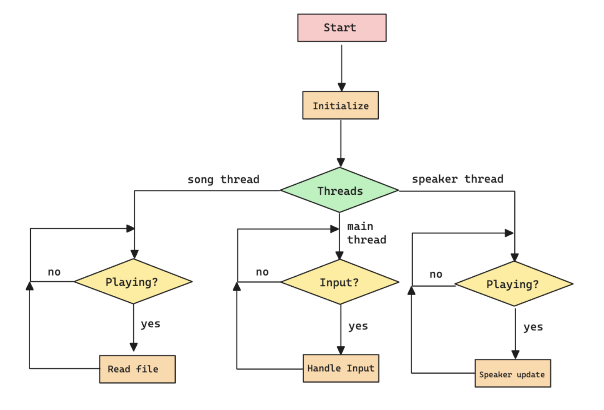
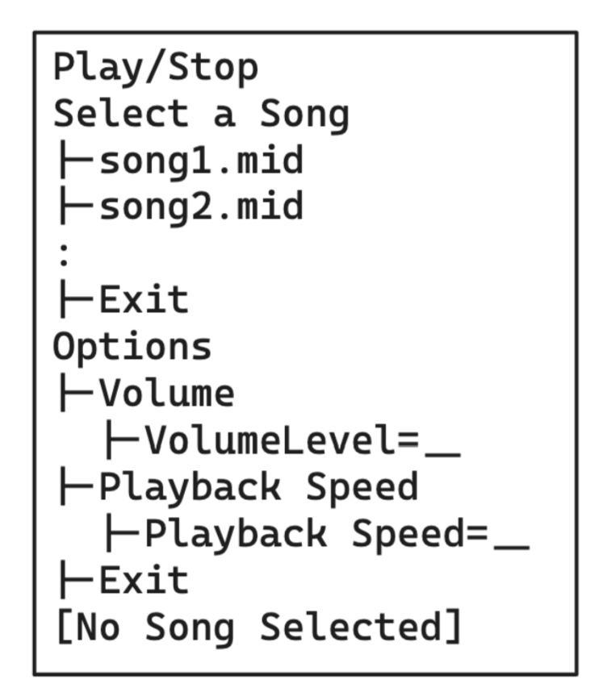
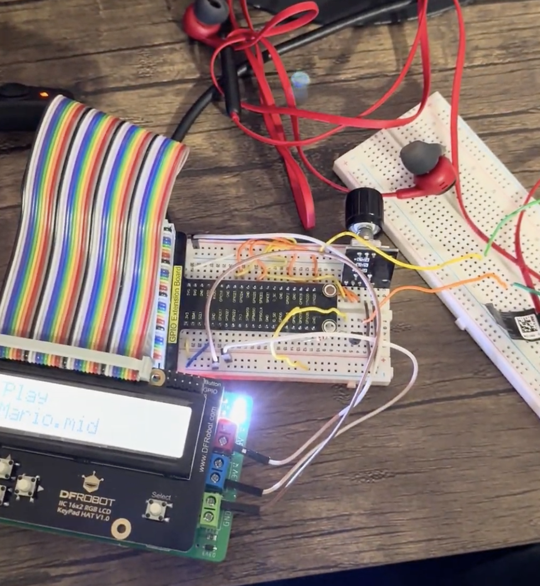

MIDI Player
Embedded Systems II Course Project
Overview
Description
The project is a MIDI Music Player that reads MIDI files and allows the user to select from the currently downloaded files to play. The project will be written in C with assembly.
- Assembly is used to generate/stop the note waveforms at an input frequency.
- C is used to handle the user interface, file reading/parsing, and timing.
Each MIDI file is a song that the user can select from and is stored onto the RP4 beforehand. The list of MIDI files is read and generated rather than hardcoded.
Features
- An adequate user interface that can choose from multiple MIDI files
- The ability to play and stop music at an adjustable volume and adjustable playback speed.
- Regarding the required hardware, an LCD and rotary encoder is attached to the RP4. The LCD displays the current menu option alongside the currently selected song and the rotary encoder will allow the user to navigate the user interface. A single speaker will also be connected to the RP4. It will serve as the output for all of the music and due to the capabilities of MIDI files, we will be able to play multiple notes simultaneously. Any speaker can be used.
Pictures


